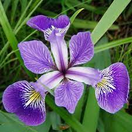
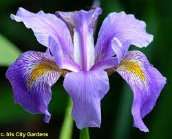
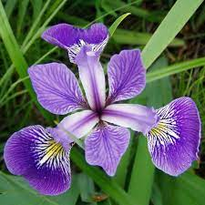
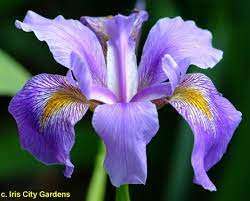

Hello
There are 3 different types of Iris Flowers that this Model can identify
Iris-setosa, Iris-virginica, and the Iris-versicolor
Iris-setosas have an average Sepal Length of 5CM, an average Sepal Width of 3.4CM, an average Petal Length of 1.5CM, and an average Petal Width of 0.2CM
Iris-versicolors have an average Sepal Length of 6CM, an average Sepal Width of 2.8CM, an average Petal Length of 4.3CM, and an average Petal Width of 1.3CM
Iris-virginicas have an average Sepal Length of 6.6CM, an average Sepal Width of 3CM, an average Petal Length of 5.6CM, and an average Petal Width of 2CM
 


